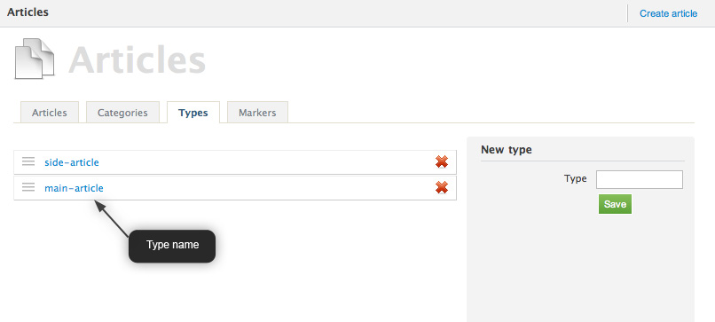
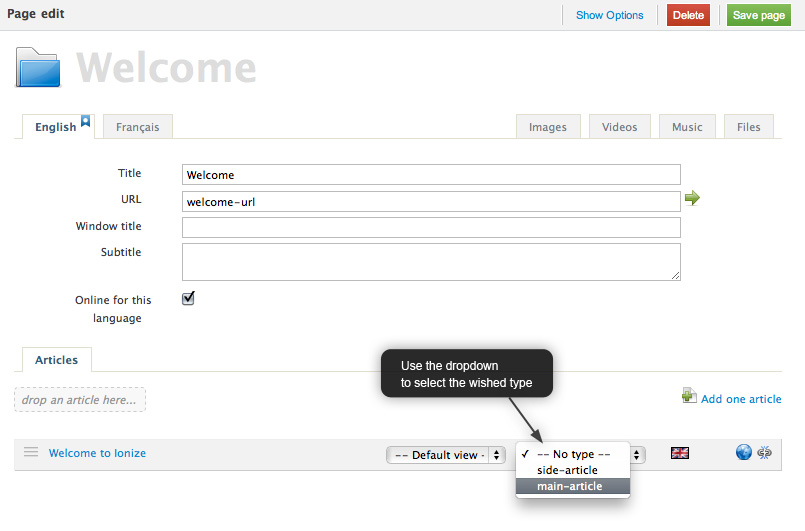

Article and Types
In a page, some articles are displayed in the central column and other articles need to be displayed in a side column.
Article Types make this possible.
Types are used by the editor on the articles linked to pages and by the designers in views.
To create a type, go to the Ionize articles panel : Content > Articles

Using types in content edition
The article is set in the page articles list.
- Edit one page
- In the bottom article list, for each article, the type can be set.

An article can have one type when linked to a page and one other when linked to another page.
Using type in views
<!-- Loops through articles which have the type "main-article" --> <ion:articles type="main-article"> <ion:article /> </ion:articles> <!-- Loops through articles which have no type --> <ion:articles type=""> <ion:article /> </ion:articles> <!-- Loops through all articles --> <ion:articles> <ion:article /> </ion:articles>